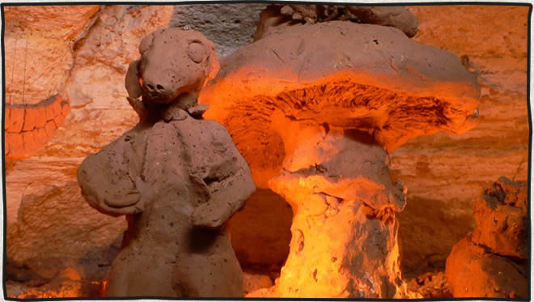

Airmans's Cave to the Aggie Art Gallery
posted Mar 02, 2009 On Sunday March, 4 2007 my friends Mike and Julian and I along with my dog Paddy decided to check out Airman’s Cave on the Greenbelt in Austin. We have read and heard stories about the cave which is only a few miles from where I live near Barton Springs. The cave was discovered in 1971 by two airmen from the Bergstrom Air Force Base in Austin. The entire cave system is approximately 3.3 kilometers and there are very few place to stand the entire way.

Jules squeezing through the birth canal.
Our day started out at the 79th annual Kite Festival held at Zilker Park every year. With bright blue, cloudless skies the festival was a stark contrast to what we would experience later in the afternoon. After a short hike from the Gus Fruh entrance to the Greenbelt we arrived at the opening of Airman’s cave around 4:30. Twenty feet into the entrance and you encounter the tightest squeeze of the entire cave system. Known as the Birth Canal, the key-hole entrance narrows so tightly that you must inch worm your way along for 15 feet with your arms in front of you. Paddy had no problems scurrying through here.
Our first encounter with wildlife in the cave was a bat hanging from the ceiling in the first room after the birth canal. Our next encounter came a few minutes later when we heard voices coming up behind us. Two guys, Ben and Ben, scurried their way through the entrance in only a few minutes. It took the 3 of us about half an hour. The Ben’s come have made the trip to Aggie Art gallery several times before and lead the way for us. It is impossible to get lost if you’re only going as far as the art gallery. There are no significant tunnels off the main system to lead you of course. The crawl to the art gallery was a series of very low tunnels that open into small rooms where you can sit up for a break. There was one point where we had ascend vertically through a hole about 4 feet high and then back to the horizontal low ceiling crawl. It took 1½ hours of crawling to get to the Standing Room adjacent to the Aggie Art Gallery (approximately 1 kilometer). This is the first time we were able to fully stand up since entering the cave.
The Aggie Art Gallery is a long room o the left and just before the Standing Room. Entering it was a surreal experience. Hundreds of clay sculptures covered the walls, ceilings and floor. There are some pretty creative creations. Someone even made a dome light out of an LED light and clay that was eerily still faintly glowing. We spent the next 3 hours adding our own creations to the collection. Clay was easy to come by – just grab a handful from the floor.
The crawl out went quickly and we made it out by 10:30pm, 6 hours after entering. I plan going back sometime. I just hope those UT students that made national news by getting lost didn’t cause the entrance to be barred.

Julian and Paddy with Mike in the background right after going through the birth canal

Some friends we met inside the cave – Ben and Ben

We arrived at the standing room after a couple hours of crawling

Ben in the Aggie Art Gallery

Sculptures in the Aggie Art Gallery

The quadriplegic horney hermaphrodite hippie sculpture

The owl man sculpture. There were plenty of candles in the art gallery to use a light source for taking photos

Bunny with a frosty mug of brew.

Mike and Ben and Ben in the Aggie art gallery.

Crawling back out.
-
That is a place I will never go… Mike’s blog about going in there was enough to put me off caving forever!
— Darren Ryan · Apr 21, 07:24 PM
Commenting is closed for this article.
Get in touch
Patrick [at] MountainDrawn.com